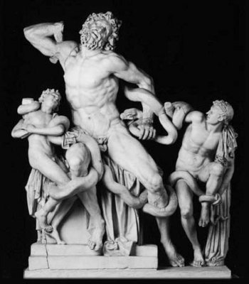
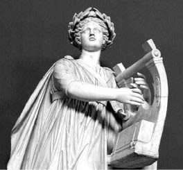

Laokon'u ve iki oğlunu yılanlar boğarken
Troya'daki Apollon tapınağının rahibi Laokon, babası gibi barışsever, insancıl ve olayları değerlendirme yönünden her zaman aklını kullanan gerçekçi biriydi. Babası Antenor, Troya kralı Priyamos'un yakın arkadaşı ve krallığın İhtiyarlar Kurulu'nun da hatırı sayılır etkin bir üyesiydi. Hatta herkesin sevgi ve saygı beslediği bu yaşlı Antenor; Troya savaşına sözde neden olan evli-barklı güzel Helena'nın Paris'le Yunanistan'dan kaçıp geldiğinde, bu olayı tatlıya bağlamak istemişti... Helena'yı geri almak için ta Yunanistan'dan elçi olarak gelen kocası kral Menelaos'la Odiseus'u, Anadolululara özgü içten bir konukseverlikle kendi evinde günlerce ağırlamıştı. Helena'nın ve getirdiği çeyizin geri verilmesi için birçok girişimlerde de bulunmuştu. Ne var ki güzel Helena'nın, Yunanistan'dan birlikte kaçıp geldiği Paris'ten başkasını görmüyordu gözü! İşte Antenor'un sonuçsuz da kalsa Helena'nın geri verilmesi için yaptığı insanca girişimleri ve konukseverliği, Yunanistanlı elçileri çok duygulandırmıştı. Bu elçiler Troya'dan elleri boş ayrılırken, Antenor'un kapısına bellenti olarak bir pars postu asmışlardı... Troya savaşı sonunda bütün ülke talan ve kıyıma uğradığında, bu bellenti yardımıyla Antenor ve ailesini, Yunanistanlı askerler esirgeyip koruyacaktı!..
Antenor'un oğlu insancıl ve gerçekçi Laokon da, dinsel bir görevle yükümlü olarak tanrı Apollon'un tapınağında bir rahip olarak çalışmasına karşın, tanrıların kapris ve dayatmalarına da sürekli karşı çıkardı. Babası gibi içinde yaşadığı dünyanın gerçekleriyle yaşamayı yeğlerdi. Örneğin tapınakta bir gece nöbeti sırasında, Apollon'un kutsal heykeli önünde, kesinkes yasak olmasına karşın karısıyla sevişti; karısı da daha sonra doğuracağı ikiz çocuklarına orada gebe kaldı. Bu yüzden de tanrı Apollon'un giderek şahlanacak kin ve öfkesini üzerine çekti... Ne var ki rahip Laokon'un işlediği günahlar, yalnızca bununla da sınırlı değildi! Tanrı dayatmalarını hep kulak ardı eden bu gerçekçi rahibin bir başka günahı daha vardı! Hem de savaş sonrasında sağ kalabilen Troyalılarca bile binbir pişmanlıkla anımsanacak bir günah! Eğer halk, rahip Laokon'u o zaman dinleyip o ünlü tahta atın bir tanrı armağanı olmayıp bir tuzak olduğu uyarılarına kulak verseydi, Troya o ürkünç yakım ve kıyımlara uğramayacak; Anadolu binyıllar boyunca ardı ardına gelecek işgal ve talan dalgaları altında ezilmeyecekti...
Çünkü on yıl boyunca her türlü saldırıyı püskürten Troya halkı karşısında surları düşüremeyeceğini anlayan Yunanistanlı yağmacı ordular; tahtadan yaptıkları bir atı tuzak olarak kullandılar. Bu tahtadan dev atın içine de en seçme askerlerini yerleştirdiler ve onu Troya surlarının dışına bıraktılar. Gemilerini gözlerden ırak kuytulara sakladılar ve kendileri de bir yerlere sinip sözde gerisin geri dönüp gitmiş süsü verdiler. Sonra da casuslar aracılığıyla bu tahta atın tanrılarca Troya halkına kazandığı yenginin bir armağanı olarak gönderildiği safsatasını yaydılar. Troyalılar da kazandıklarını sandıkları direniş savaşının coşkusu içinde, bu yalana dört elle sarıldılar. Bir teşekkür olarak denizler tanrısı Poseydon'a on bir boğa kurban etmeye karar verdiler. Ve geleneklere uygun olarak, bu boğaları kurban etme görevi rahip Laokon'a düşüyordu...
İşte kurban kesme görevini yerine getirmek üzere deniz kıyısındaki sunağa gelmezden bir gün önce Laokon; tahta atı yetkililerin ve halkın önünde uzun uzun inceledi; kargısıyla karnını, sağını solunu iyice yokladı... Sonunda atın karnının oyuk olduğunu, bunun bir tanrı armağanı olamayacağını söyledi yetkililere... Hatta daha ileri giderek, bunun saldırgan Yunanlılarca kurulmuş bir tuzak olduğunu, bu yüzden de surlardan içeri alınmaması gerektiğini öne sürdü. Yetkililer rahip Laokon'a inanmadı. Hatta onu tanrılara meydan okuyan bir günahkâr olmakla ve dinsizlikle suçladılar! Bu yüzden Laokon'un uyarıları, özellikle yetkililerin kör bilincinden yalnızca bir tepki olarak yankılandı...
Bu olaydan bir gün sonra Laokon, görevi gereği on bir boğayı kurban etmek üzere ikiz oğullarıyla birlikte sahile yakın sunağa geldi. Halk da tanrılara adadıkları boğaların kurban edilişini doyasıya seyretmek için sabırsızlanıyordu. Laokon, boğalardan birini tam kurban etmek üzereyken denizden dev boyutlu iki azman yılan çıkageldi. Yılanlar, ikiz delikanlıları boğmak üzere, onların bedenlerine sarmal sarmal dolandı. Laokon, çocuklarını kurtarmak için bu beklenmedik canavarlara canhıraş saldırdı kılıcıyla; ama kendisi de onların sarmalına girip çocuklarıyla can verdi... Olayı dehşetle izleyen halk Laokon'un ölümünü; tanrıların armağanı olan tahta atı küçümsemesinden ve onun surlardan içeri alınmasını istememesinden kaynaklanan bir ceza olarak yorumladı... Oysa yılanlar, tanrı Apollon'un gönderisiydi: Çünkü Apollon, bir zamanlar tapınağında karısıyla sevişen Laokon'a ve bu olay sonrası doğan ikiz çocuklara karşı duyduğu kin yüzünden o yılanları gönderip onları boğdurmuştu! Bu gerçeği bilmeyen halk ve yetkililer, doğruca surların dışında bekleyen ve büyük bir kutsallık kazanan tahta atın yanına gittiler. Kocaman tahta at; tanrılardan binbir özür dilenerek büyük bir özenle surlardan içeri alındı... Bütün gece Troyalılar yediler, içtiler, eğlendiler...

Apollon lir çalarken
Ve sabaha karşı tahta atın oyuk karnından yılanlar gibi sağıla sağıla çıkan asker ve komutanlar; surların dışında pusuya yatmış orduların kente girip Troya'yı talanlamaları ve yakıp yıkmaları için, sur kapılarını ardına dek açtılar...